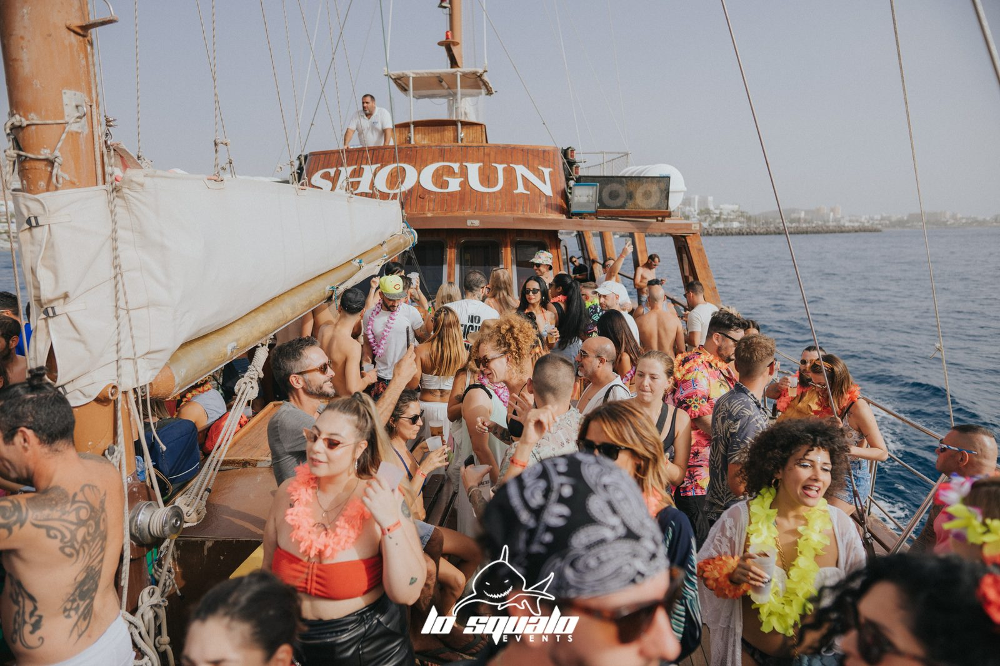
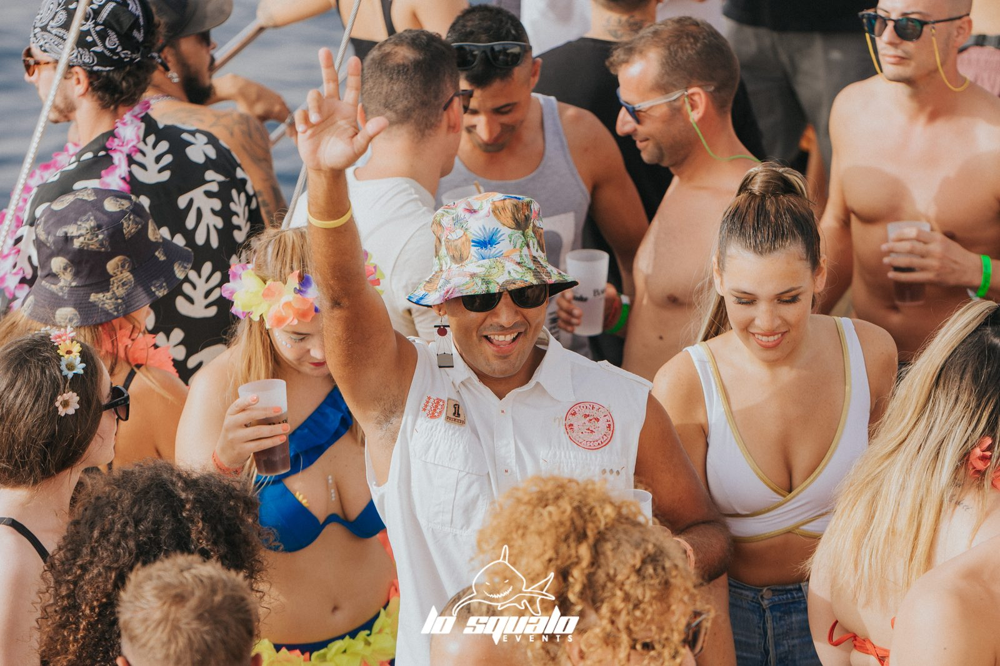
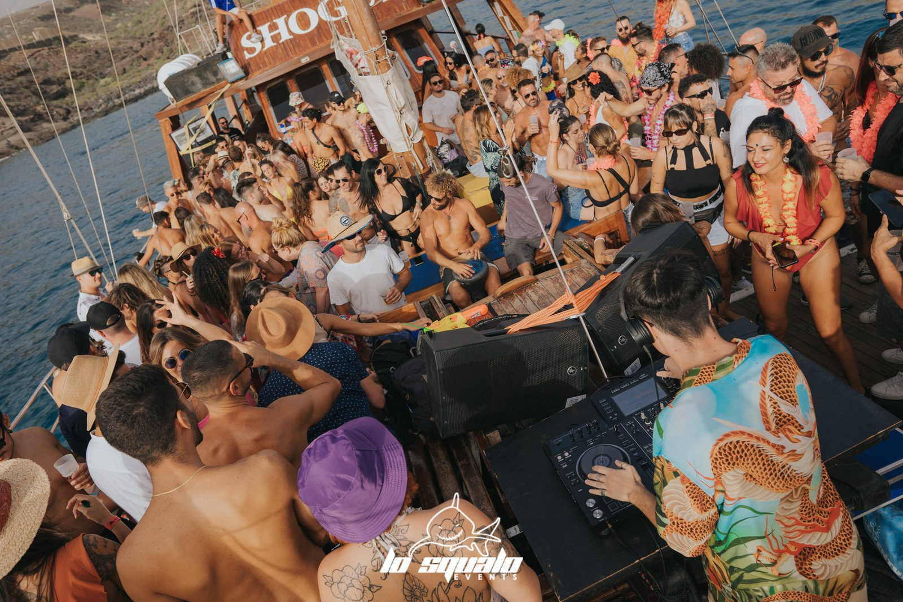
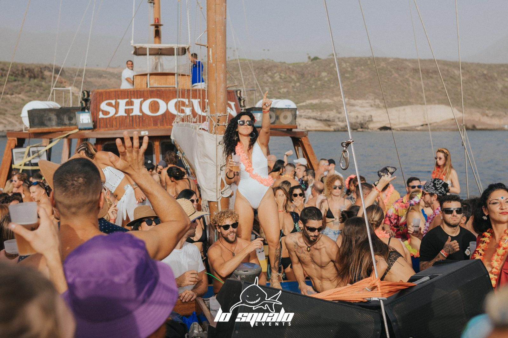
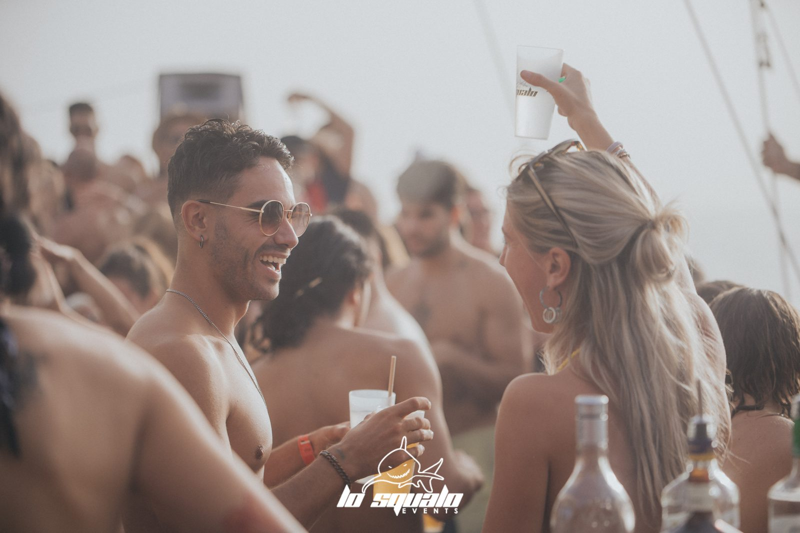
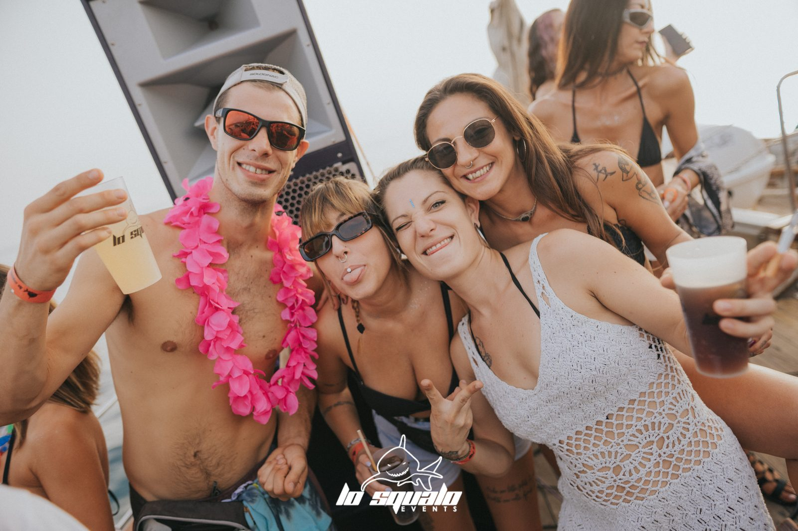
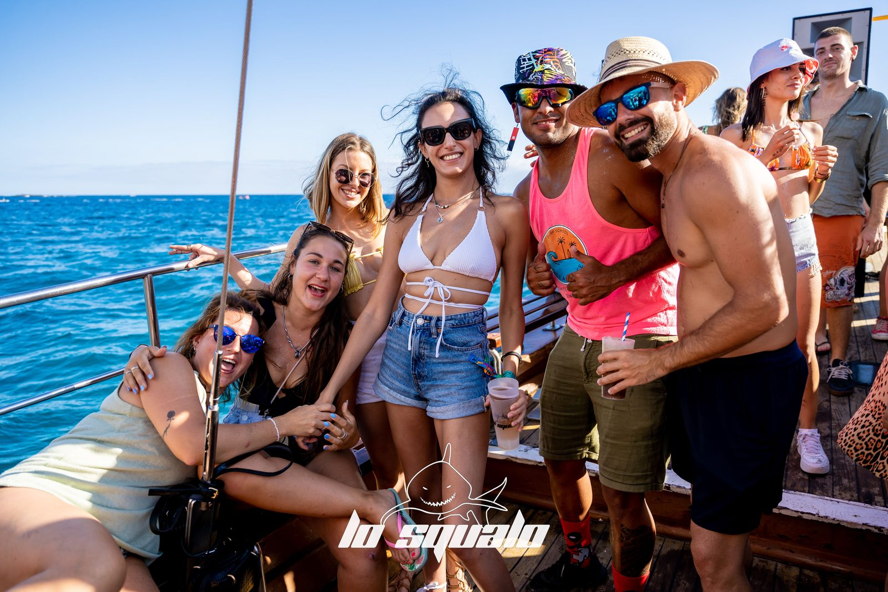
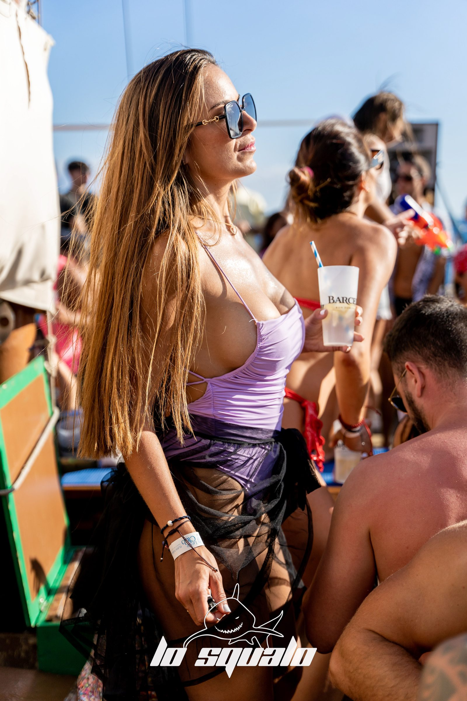

Ogni settimana, 3 ore di festa in alto mare con DJ set e open bar. La Boat Party di Lo Squalo è il modo giusto per vivere Tenerife dal mare: musica, drink e atmosfera, con partenza dalla costa sud.
Perfetta per gruppi di amici, compleanni, addii e chi vuole un piano diverso sull'isola. Scopri l'offerta e prenota il tuo posto!
Scrivici per date, prezzi e disponibilità della prossima Boat Party.
💬 Contattaci su WhatsApp